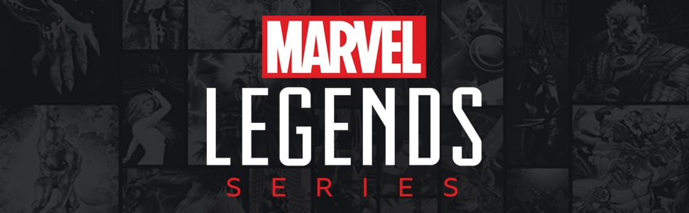

About Mcfarlane Toys
Founded over 25 years ago by Todd McFarlane,
the Grammy-and Emmy-winning producer/director and the creator of Spawn,
McFarlane Toys is a global toy company and an industry leader and innovator.
Stephan Tetrault, and his 30 plus years of experience in the toy industry,
has since joined the ownership group,
helping to propel the company to even greater growth.
As a design driven company known for unparalleled attention to detail,
McFarlane has set the bar in the action figure category. Headquartered in Tempe,
Arizona McFarlane has offices in Los Angeles, Las Vegas and Montreal.
About Marvel Legends

Marvel Legends, a popular line of action figures, began its journey with Hasbro in 2006 after the company acquired the Marvel license from Toy Biz. Toy Biz initially launched the Marvel Legends series in 2002, revolutionizing the action figure market with highly detailed, articulated figures that appealed to both kids and adult collectors. When Hasbro took over, they continued the legacy, maintaining the high quality and expanding the range of characters.
Under Hasbro, Marvel Legends evolved, introducing new innovations such as the "Build-A-Figure" concept,
where pieces included with each figure in a series could be combined to create a larger character.
This strategy boosted sales and collector interest. Hasbro’s dedication to detail, articulation,
and a diverse character lineup—from classic comic book heroes to modern cinematic icons—has solidified Marvel Legends as a premier action figure line. Today, it remains a cornerstone of Hasbro’s
product offerings, celebrated by fans worldwide for its quality and variety.